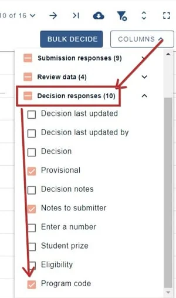
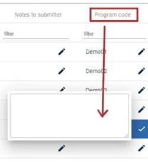

Assigning program codes in the decisions table
For event organisersNot an organiser?
Whenever submissions are displayed in the program or abstract books, the default is to include the submission ID but you can assign program codes to replace these in the decisions table, if you require.#
NB. It is advised that you become familiar with the Decisions table layout and tools first.
You can also assign program codes in the program builder.
Go toEvent dashboard → Abstract Management → Decisions → Table
Open Columns in the top right of the table, then open Decision responses, and ensure Program Code is selected.

Close the columns selector by clicking on Columns again, and return to the table view.
Navigate to the Program Code column. You can then click in the field in your chosen row and manually enter the code. Click the tick when finished.

Common questions#
We don’t want to use abstract submission numbers in the program and want to re-number abstracts for the program / abstract book. How do we do this?#
You can add a program code. This can be done in the decisions table. See Recording a decision (accepting/ rejecting/ withdrawing a submission).
Didn't solve it? Ask our support team
No question is too small, and there's no charge for asking. Raise a ticket and someone who knows the software will pick it up.
Did this page solve it?
Thanks — this helps us fix it.